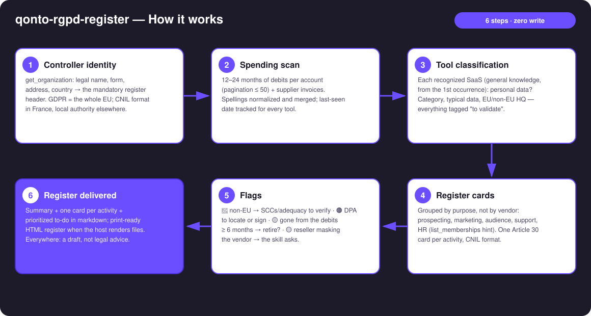
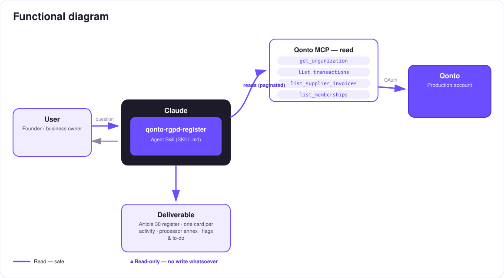

Your bank account knows your data processors better than you do — the GDPR Article 30 register, drafted from your spending.
The record of processing activities (GDPR Article 30) is the document 90% of small businesses don't have — and the first thing a supervisory authority asks for. Yet the list of processors handling your personal data is already written somewhere: in your debits. The skill reads it:
The SaaS tools that process personal data (CRM, email marketing, analytics, AI, cloud, payroll, support) — recognized from their first occurrence, Claude's general knowledge.
Purpose, typical data categories, data subjects, EU / non-EU headquarters and hosting — every attribute tagged "to validate".
One card per activity in the CNIL format, controller header filled from get_organization, visible placeholders for the human decisions.
🔴 non-EU transfer → SCCs to verify · 🟠 DPA to locate or sign · 🟡 tool gone from the debits for 6 months → retire it from the register?
Would someone use this on a Monday morning? It's the Monday a client's security questionnaire — or an authority letter — lands.
| Prerequisite | Detail | Required |
|---|---|---|
| Qonto production account | Adapts to any organization — get_organization first, nothing hardcoded | ✅ |
| Country | GDPR = the whole EU — a pan-European skill. France: CNIL card format and references; other Qonto countries: same register, local authority (BfDI/LfDI, AEPD, Garante, DSB, AP, APD/GBA, CNPD) | ℹ️ detected |
| Qonto MCP connected | Official connector (claude.ai / Claude Desktop), OAuth login | ✅ |
| Spending history | Ideally 12–24 months; thin account → register skeleton + missing parts named explicitly | ⭕ |
| A DPO or lawyer to validate | The skill produces a draft: qualification, legal bases and retention remain human decisions | ✅ at the end |

GOOGLE *WORKSPACE, GOOGLE IRELAND LTD, Google Cloud EMEA = one vendor; cross-checked with list_supplier_invoices (cleaner legal names than card labels)emitted_at (not settled_at) for the last-used date
Zero write, by design: four read tools, no write tool. Nothing moves on the account, no vendor is contacted. And the document produced is a draft register, not legal advice — qualification, legal bases and retention periods are validated by a DPO or lawyer. The skill repeats this on every output.
Illustrative examples (Claude's general knowledge), not taken from a real account.
| Category | Examples of recognized tools | Typically processed data | Frequent watch-out |
|---|---|---|---|
| CRM & prospecting | HubSpot, Pipedrive, Salesforce | Identity, contact details, sales history | US headquarters → transfer mechanism to verify |
| Email & marketing | Mailchimp, Brevo, Mailjet | Emails, open behavior, segments | Consent & legal basis to document |
| Analytics | Google Analytics, Matomo, Plausible | Online identifiers, browsing | Non-EU vs self-hosted: very different regimes |
| AI | OpenAI, Anthropic, Mistral | Prompt content (sometimes customer data!) | Check the "no training on your data" option |
| Cloud & hosting | AWS, Google Cloud, OVHcloud, Scaleway | Everything hosted | EU hosting region available? enabled? |
| Payroll & HR | PayFit, Silae, Lucca | Employee data (sensitive: IDs, salaries) | HR card mandatory, specific legal retention |
| Customer support | Zendesk, Intercom, Crisp | Identity, conversations, metadata | Conversations = personal data, often forgotten |
| E-commerce & payments | Shopify, Stripe | End customers, transactions | Controller/processor role ambiguous → to validate |
| Flag | Trigger | Suggested action |
|---|---|---|
| 🔴 Non-EU transfer | Non-EU headquarters or hosting detected | Verify adequacy decision / standard contractual clauses / DPA annexes |
| 🟠 DPA to check | Processor with no known signed DPA | Find the vendor's DPA page, sign or archive it |
| 🟡 Ghost tool | No debit for ≥ 6 months | Confirm it's gone → retire from the register + data deletion request |
| 🟡 Masked vendor | Reseller, marketplace or app store in the label | The skill asks which product sits behind the charge — never a guess |
| Output | Format | When |
|---|---|---|
| Conversation reply | Markdown tables: processor summary, one card per activity, prioritized to-do | Always — the baseline |
| Print-ready register | HTML file/artifact: controller header, Article 30 cards, processor annex, to-do | When the host renders files (claude.ai artifacts, Claude Desktop, Claude Code); automatic fallback to tables otherwise |
| Disclaimer banner | "Draft register, not legal advice — validate with a DPO or lawyer" | On every output, no exception |
The ≤ 3-minute demo attached to the PR walks through: the problem (the document nobody has) → the spending scan → classification & cards → the full Article 30 register generated from a bank statement → the DPA/transfer to-do. It runs live on a real production account. The detailed shooting script is kept internal (outside the repository).
| Idea | Effort | Note |
|---|---|---|
| Optional multi-MCP: scan Gmail/Drive for already-signed DPAs | Medium | Dynamic detection — activates when the MCP is present, otherwise the skill says so and continues |
| Register diff: rerun 6 months later → entrants / retirees | Low | Reuses the last-seen date |
| Ready-to-send "DPA request" and "data deletion request" templates | Low | Still zero write — text to copy |
| DPIA appendix: activities likely to need an impact assessment | Medium | Always "to validate", never a definitive qualification |